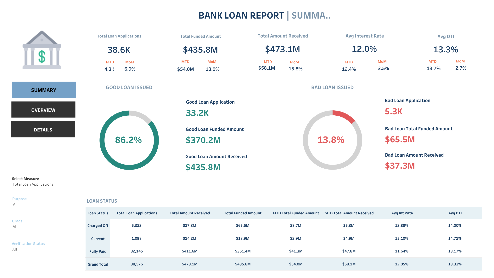

Analyze key indicators for pizza sales data to gain insights into a business performance from a Youtube tutorial by Data Tutorials

Analyzing Bank Loan Data
Exploring key loan-related metrice and tracking loan portfolio's health including identifying trends to be able to inform lending strategies. from a Youtube tutorial by Data Tutorials
Analyzing International Debt Statistics
Exploring international debt data to identify total countries, highest debt holders, and lowest repayments from DataCamp Practice
Analyzing Industry Carbon Emissions
Identifying the top industries contributing to carbon emissions from DataCamp Practice.
Analyzing Student Mental Health
Explore how the length of stay abroad impacts international students' mental well-being based on survey data. From DataCamp Practice.
Exploring London's Travel Network
Discovering the most and least popular transport types and trends over time from DataCamp Practice.